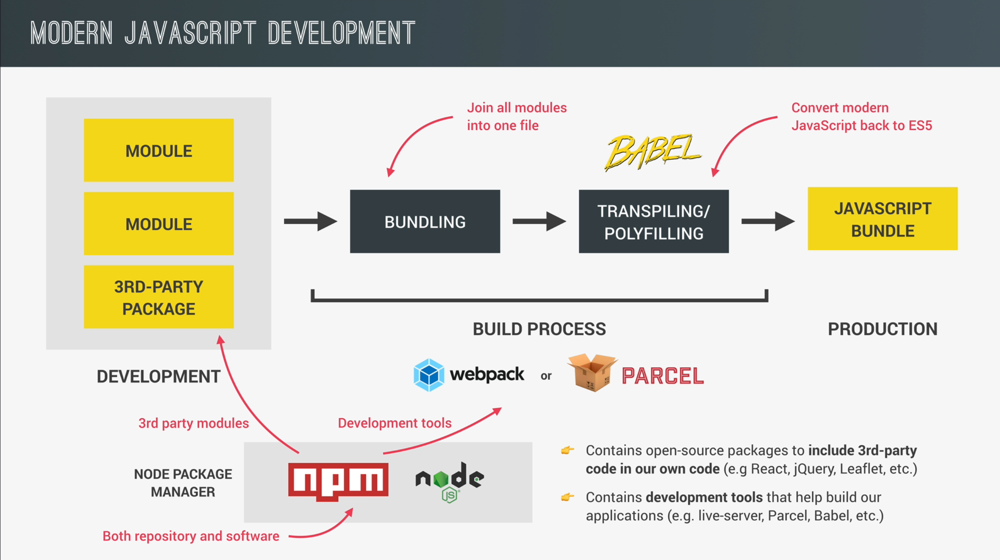
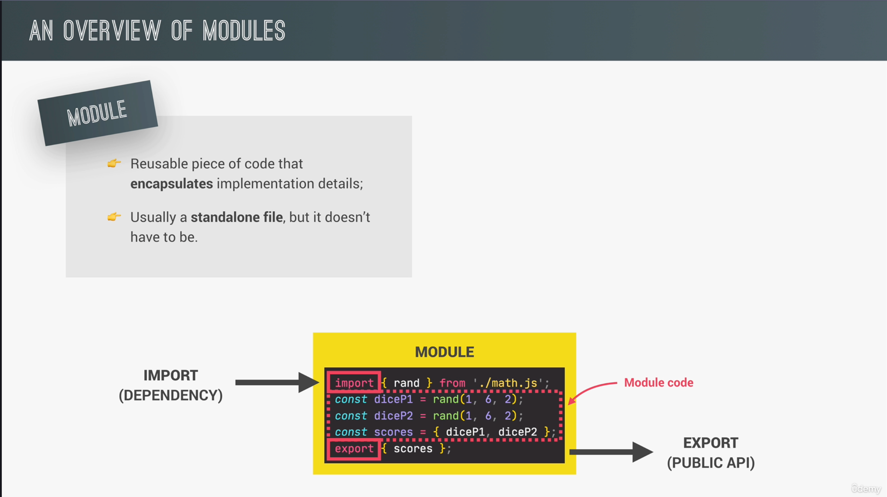
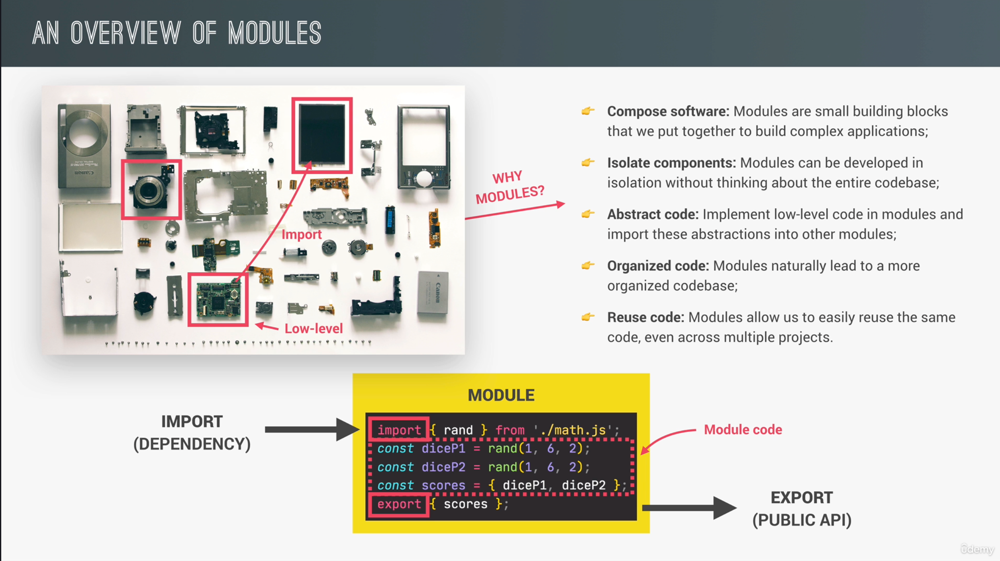
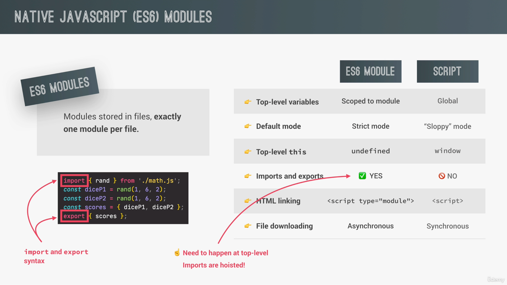
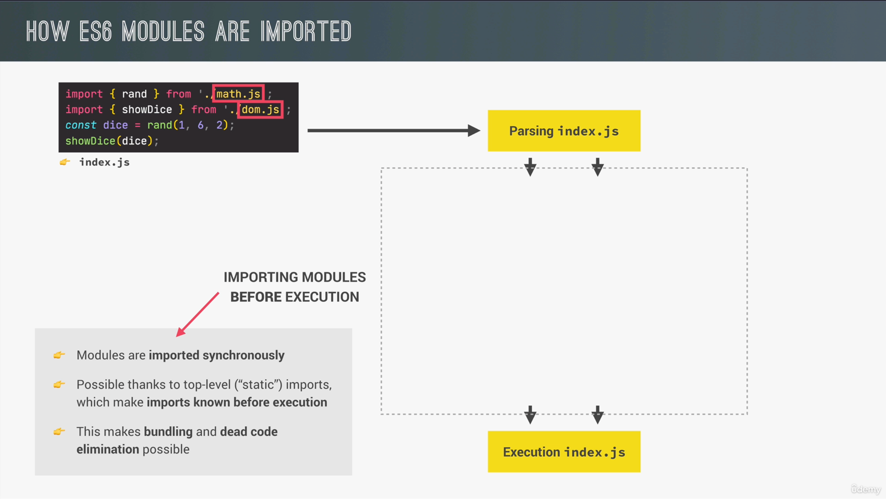
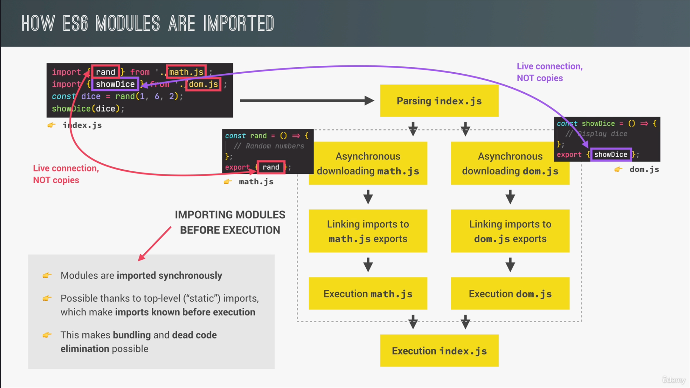
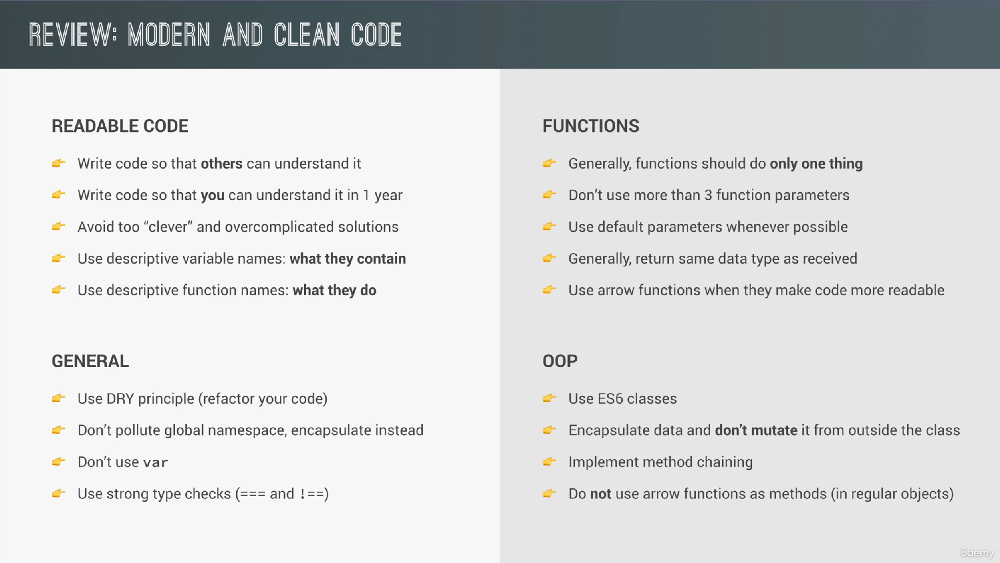
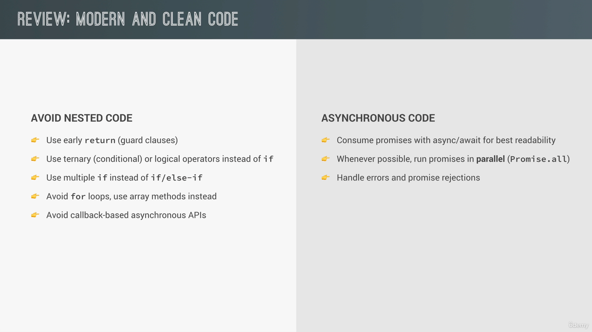

// Exporting a variable
export const name = 'John';
// Importing the variable
import { name } from './module.js';
// Using top-level await to fetch data from an API
const response = await fetch('https://api.example.com/data');
const data = await response.json();
console.log(data);
const employeeDetailsModulePattern = (function () {
const empName = 'Ponniah Kothandaraman';
const companyDetails = [];
const technologies = ['JavaScript', 'React', 'Node.js'];
const addCompanyDetails = function (company, role) {
companyDetails.push({ company, role });
console.log(`${empName} joined as ${role} at ${company}`);
// empName is not acessible outside module, but it is accessible due to closure,
// It has access to the variables in the outer scope of the module pattern.
};
return {
companyDetails,
technologies,
addCompanyDetails,
};
})();
employeeDetailsModulePattern.addCompanyDetails('Google', 'Software Engineer');
employeeDetailsModulePattern.addCompanyDetails(
'Facebook',
'Senior Software Engineer',
);
// math.js - CommonJS module
function add(a, b) {
return a + b;
}
module.exports = { add };
// main.js - Importing CommonJS module
const math = require('./math.js');
console.log(math.add(2, 3)); // Output: 5
// math.js - AMD module
define('math', [], function() {
function add(a, b) {
return a + b;
}
return { add };
});
// List files in the current directory
ls
// List files in the current directory with details
ls -l
// List all files, including hidden files
ls -a
// Change to a different directory
cd my-project
// Move up one directory level
cd ..
// Move to the root directory
cd /
// Check the current directory path
pwd
// Create a new directory
mkdir src
// Create a new directory and navigate into it
mkdir my-new-project && cd my-new-project
// Create a new file
touch index.js
// Create a new file and open it in a text editor
touch script.js && nano script.js
// Move or rename a file
mv old-file.js new-file.js
// Remove a directory and its contents
rm -r old-directory
// Remove a file
rm old-file.js
// Run a JavaScript file with Node.js
node index.js
// Install a package
npm install lodash
// Install a specific version of a package
npm install lodash@4.17.21
// Install a package globally
npm install -g create-react-app
// Check for outdated packages
npm outdated
// Update all packages to their latest versions
npm update
// Publish a package to the NPM registry
npm publish
// Install Parcel globally
npm install -g parcel-bundler
// Run Parcel with an entry point
parcel index.html
// Install Babel as a development dependency
npm install --save-dev @babel/core @babel/cli @babel/preset-env
// Create a .babelrc configuration file
{
"presets": ["@babel/preset-env"]
}
// Transpile your code using the Babel CLI
npx babel src --out-dir dist
// Using meaningful variable names
const userName = 'John Doe';
const userAge = 30;
// Keeping functions small and focused
function calculateArea(radius) {
return Math.PI * radius * radius;
}
// Avoiding global variables
(function() {
const privateVariable = 'This is private';
console.log(privateVariable);
})();
// Using comments to explain complex code
function complexFunction() {
// This function performs a complex calculation
// It takes two parameters and returns the result
return someComplexCalculation(param1, param2);
}


// Imperative programming example
const numbers = [1, 2, 3, 4, 5];
const doubledNumbers = [];
for (let i = 0; i < numbers.length; i++) {
doubledNumbers.push(numbers[i] * 2);
}
// Output: [2, 4, 6, 8, 10]
// Declarative programming example
const numbers = [1, 2, 3, 4, 5];
const doubledNumbers = numbers.map(num => num * 2);
// Output: [2, 4, 6, 8, 10]